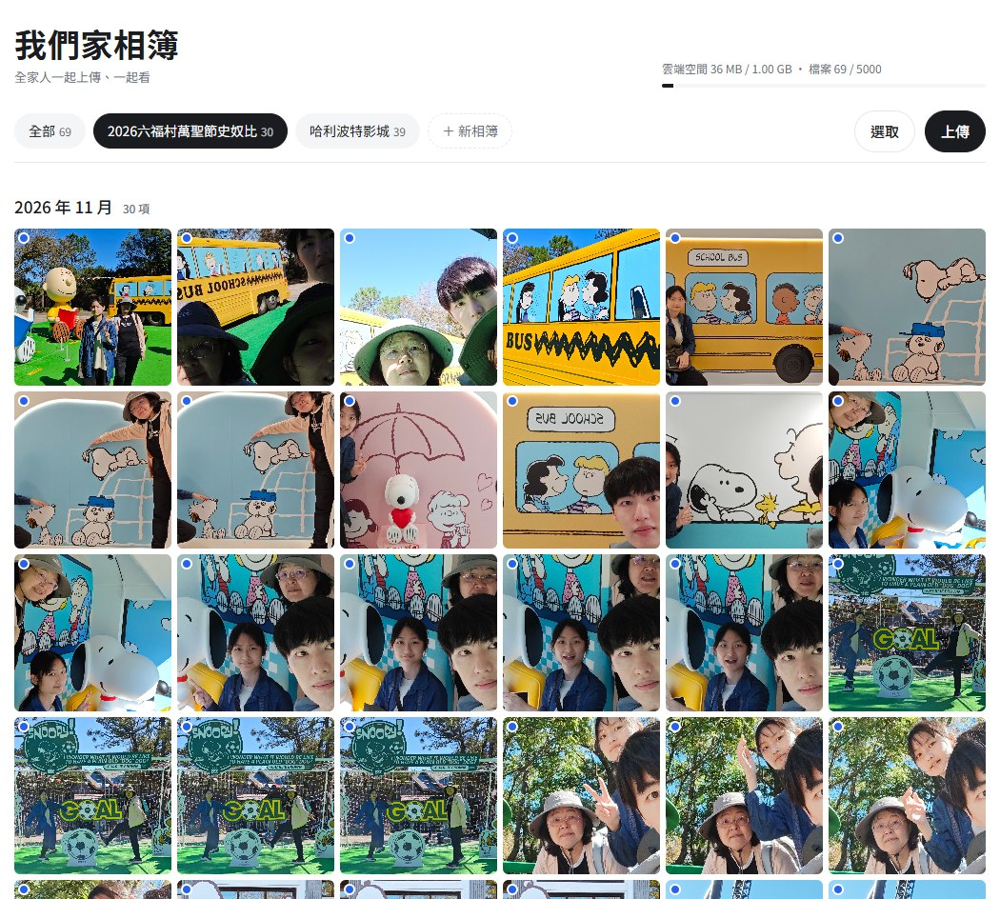

中英對照 工具 · Chrome 擴充YouTube 英文字幕即時翻譯英文字幕即時轉繁中，點選單字可查詢多重釋義、發音與例句；支援桌機 Chrome、Android 與 iPad。 整份字幕預先翻譯，消除延遲多組翻譯來源備援與退避重試學習模式：隱藏中譯，只保留查詞
01語音轉錄02音量分析03精華選段04時間軸組接05轉場06字幕對時07片頭標題08匯出驗證 自動化 · Agent Skill剪片自動化 Skill以開源剪輯軟體 FilmCraft 與 EffectCraft 為基礎，將找精華、剪接、轉場、字幕與片頭整合為可重複執行的流程。 指令不寫死，執行前先查詢當前版本語法字幕依新時間軸重新對時並轉為繁中
實際畫面 互動網頁家庭共用相簿網頁家人透過連結共同上傳、瀏覽照片與影片的家庭相簿，白底簡潔設計，已實際投入家庭使用。 依活動分相簿（如旅遊、節日），並依月份分組顯示雲端空間與檔案數量即時顯示，支援批次選取與上傳比較 Google One、iCloud、NAS 的空間與成本依家庭裝置組成提出建議配置
EXIF · DateTimeOriginal202420252026 工具分析照片影片自動分類工具分析評估以拍攝日期與中繼資料自動整理檔案的做法。 依據：EXIF、影片中繼資料、檔名規則例外：缺少日期、重複檔、移動或複製
移動游標看 2.5D 視差 影像研究平面作品轉實拍空間運鏡逐格拆解經典畫作轉為電影運鏡的參考影片，提出兩種製作路徑。 AI 圖生影片：分鏡、運鏡提示詞、起始畫面2.5D 分層：前中背景分離、推近平移與景深
技術反推Instagram 影片技術反推透過瀏覽器自動化檢視參考網站的程式套件與著色器參數，判斷轉場原理與重建方式，成果即上方的黃金渾儀。 擷取資源清單與 uniform 參數推論：燒蝕轉場、抖動透鏡、影像序列